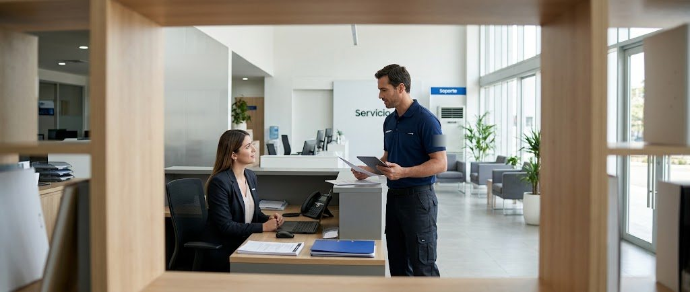

Se detiene a mitad del ciclo en secadora Samsung
Qué significa, cuál es la causa más probable y cuándo conviene llamar al técnico. Servicio técnico Samsung a domicilio en Panamá.

¿Por qué mi secadora Samsung presenta este problema?
Causa probable: Sobrecalentamiento por ducto tapado, sensor de temperatura o puerta que no cierra bien.
En Panamá el calor, la humedad y las variaciones de voltaje aceleran el desgaste de componentes de la secadora, por eso esta falla es frecuente en equipos con algunos años de uso.
Qué puedes revisar antes de llamar
Deja enfriar, limpia el filtro y el ducto y vuelve a intentar.
Revisa también que el equipo esté bien conectado, nivelado y con el tomacorriente en buen estado. Si no estás seguro de algo, no desarmes el equipo: puedes empeorar la falla o hacerte daño.
¿Es urgente?
Revisar pronto No es una emergencia, pero conviene revisarlo pronto: una falla pequeña que se deja pasar suele terminar en una reparación más costosa.
Qué hacemos en la visita
- Revisamos el equipo en tu casa u oficina y confirmamos la causa de la falla.
- Te explicamos el problema, las opciones y el costo antes de empezar.
- Reparamos o reemplazamos la pieza necesaria y probamos el equipo.
- La reparación incluye garantía sobre la pieza y la mano de obra.
Causas posibles en detalle
Se detiene a mitad del ciclo es un síntoma que puede tener más de una causa en la secadora Samsung. Por eso el técnico no cambia piezas a ciegas: mide, descarta y confirma la falla antes de reparar. En este caso la causa más probable es: sobrecalentamiento por ducto tapado, sensor de temperatura o puerta que no cierra bien.
¿Reparar o reemplazar la secadora Samsung?
Si la falla es de una pieza accesible y el equipo está en buen estado general, reparar casi siempre conviene. Si el equipo es muy antiguo o el daño es costoso, te explicamos las opciones con honestidad para que decidas con la información completa.
Cómo prevenir esta falla
Evita secar prendas con restos de productos inflamables. Además, protege el equipo de bajones de voltaje y evita sobrecargarlo.
Servicio técnico de secadoras Samsung en Ciudad de Panamá
Atendemos este tipo de falla a domicilio en San Francisco, Bella Vista, Obarrio, Costa del Este, Punta Pacífica, Betania, San Miguelito, Albrook, Arraiján, La Chorrera y más zonas. Escríbenos por WhatsApp con el modelo y la falla.
Otras fallas de secadoras Samsung
Preguntas frecuentes
¿Cuánto cuesta reparar: se detiene a mitad del ciclo?
Depende de la causa y de la pieza. Escríbenos por WhatsApp con el modelo y el síntoma; te confirmamos el costo de la visita antes de ir y el de la reparación antes de empezar.
¿Cuánto tarda la reparación?
Muchas fallas se resuelven en la misma visita. Si hace falta una pieza, te avisamos el plazo antes de empezar. Coordinamos visitas en 24 a 48 horas.
¿Atienden en mi zona de Panamá?
Damos servicio a domicilio en Ciudad de Panamá, San Miguelito y Panamá Oeste. Escríbenos con tu barrio y te confirmamos.
Servicio en tu zona
¿Tu secadora Samsung tiene esta falla?
Escríbenos por WhatsApp con el equipo, el modelo y la falla. Te confirmamos disponibilidad para tu zona en minutos.